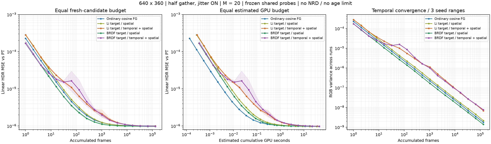
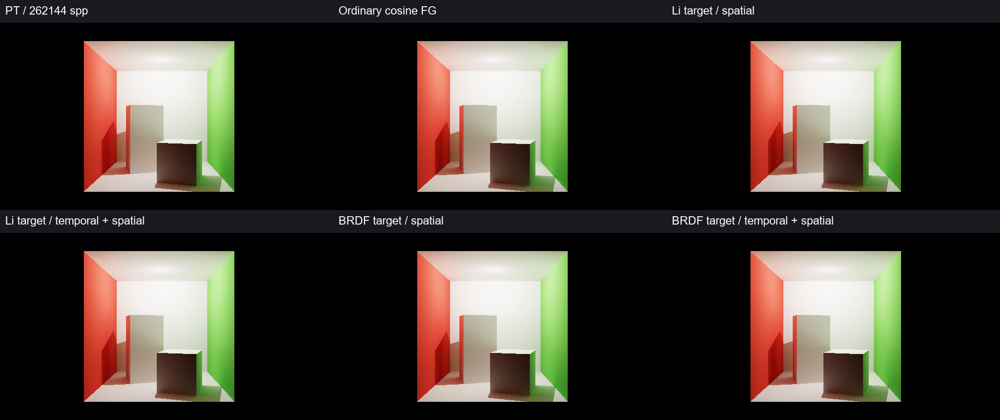

历史实验：该 BRDF target 实现已按要求回退。当前渲染器恢复为 Li 亮度 target；本报告数据保留。实验源码备份与脚本归档于 build/brdf-target-rollback-archive。
BRDF target 改善了仅空间复用的前期采样效率，但当前实现按 GPU 时间比较仍未胜过普通 FG。256 帧时空间复用 MSE 为 1.60439e-06，比普通 FG 低 16.2%，比旧 Li 空间复用低 21.5%。时空复用的改善并不一致：部分预算改善，但 256 帧 MSE 比旧 target 高 15.7%。长期误差基本相同，三组新方案均通过本次预设稳定标准。
使用接收表面启用的漫反射、非尖锐镜面反射 lobes，计算反射光亮度作为 target。Falcor material.eval() 已包含余弦，不能再乘一次。独立追踪的尖锐/Delta 镜面项不参与该 reservoir 的 target。初始候选、时间/空间合并、反向来源归一化调用同一个 targetAt()。新增 restirBrdfTarget 属性（默认 true）可回切 Li target；ReSTIR 总开关仍默认关闭。
当前/历史 reservoir 保存来源 packed hit 和来源视线方向。重连时在当前接收表面重新评估 p_current，不能直接使用候选缓存的旧 target。选中后将缓存 target 更新为当前值；回写 reservoir 时，来源命中和视线改为当前接收表面。反向校正则分别重建各来源表面的材质、法线和视角，计算选中样本在该来源上的 p_i。几何/可见性不支持时 p_i=0。历史 M 截断、Jacobian、历史像素映射和时间阶段反馈策略均保持不变。
合并权重为 p_current(y) × W_i × M_i × J_i；最终 W = weightSum × p_selectedSource(y) / [p_current(y) × Σ_i M_i p_i(y)]。不再把来源 target 约掉。target 可以为零；零目标、零分母不会除零，M 仍记录被考虑的样本数。target 评估使用固定随机种子，保证不会因调用顺序而变化；本次定量结论限于确定性 Lambert 材质。
参考 NVIDIA 示例 target、时间归一化。这是本项目的独立实现，未宣称与 RTXDI 完全等价。现有 Jacobian 范围拒绝、DDGI 近似及半分辨率重建仍会影响结果。
不同来源 target 的两源 RIS 离散穷举：真实积分 7，完整公式得到 7；漏掉当前表面 retarget 则得到约 14.8644。GPU 开关/相机移动检查无非有限值；普通 FG 的 1、16、256 帧输出与修改前逐位一致。reservoir 从 96 增至 128 字节，新增来源信息的加载和 BRDF 求值成本包含在下列耗时中。
GPU 来源信息验证：在原始 Cornell 镜面材质、相机运动、全/半分辨率、target 回切和关灯的六组捕获中，时间/空间 reservoir 的缓存 target 与 targetAt(r,r) 重算值最大相对误差均为 0。有效像素标记确保实际执行了检查。见 验证记录。此可选诊断输出在性能测量时未启用；诊断输出与 UI 开关在长测试之后补入，未改动已测权重公式。
输出 640×360、gather 320×180，Lambert Cornell。普通 FG、BRDF 空间复用、BRDF 时空复用全部重新运行三个随机序列，每组先预热 probe 8192 帧并冻结，清空 reservoir/Accumulate，再累积 131072 帧。种子偏移 0、131072、262144。M=20；jitter 开启；全分辨率积分、年龄限制、空间反馈及 NRD 关闭；空间 2 pass × 4 邻居、半径 8。probe 输出逐位一致已验证。
普通 FG 仍使用 cosine 提案，ReSTIR 保持 uniform hemisphere 提案，每有效粗像素每帧一个新候选。额外叠加上次 Li target 的空间/时空复用作为对照；没有同时更换采样分布。PT 复用独立 262144 spp 未降噪参考。MSE 在场景 mask 内按线性 HDR RGB 计算；HDR-FLIP 使用共享曝光参数、ACES、67 PPD。GPU 时间包含冻结 probe 时整个渲染图，时间预算曲线按稳态帧耗时×帧数估算，未包含公共预热、编译和落盘。

| 帧数 | 普通 FG | Li 空间 | Li 时空 | BRDF 空间 | BRDF 时空 |
|---|---|---|---|---|---|
| 16 | 1.52763e-05 | 1.78637e-05 | 2.33915e-05 | 1.14903e-05 | 1.82542e-05 |
| 256 | 1.91477e-06 | 2.04285e-06 | 3.93263e-06 | 1.60439e-06 | 4.54836e-06 |
| 4096 | 1.06199e-06 | 1.05377e-06 | 1.24501e-06 | 1.01464e-06 | 1.21602e-06 |
| 32768 | 1.01078e-06 | 9.84363e-07 | 1.0127e-06 | 9.83891e-07 | 1.01061e-06 |
| 131072 | 1.00719e-06 | 9.76846e-07 | 9.90016e-07 | 9.77245e-07 | 9.89043e-07 |
三序列平均 MSE 首次达到阈值的已测检查点，不在检查点间插值。
| MSE 阈值 | 方案 | 帧数 / 累计 GPU 时间估计 |
|---|---|---|
| 2e-06 | Ordinary cosine FG | 256 / 0.03472 s |
| 2e-06 | Li target / spatial | 512 / 0.13856 s |
| 2e-06 | Li target / temporal + spatial | 2048 / 0.57544 s |
| 2e-06 | BRDF target / spatial | 256 / 0.08764 s |
| 2e-06 | BRDF target / temporal + spatial | 1024 / 0.35687 s |
| 1.2e-06 | Ordinary cosine FG | 2048 / 0.27779 s |
| 1.2e-06 | Li target / spatial | 2048 / 0.55425 s |
| 1.2e-06 | Li target / temporal + spatial | 8192 / 2.30177 s |
| 1.2e-06 | BRDF target / spatial | 1024 / 0.35057 s |
| 1.2e-06 | BRDF target / temporal + spatial | 8192 / 2.85495 s |
| 方案 | MSE | HDR-FLIP | GPU ms | 末次翻倍 MSE 变化 | 实用稳定 |
|---|---|---|---|---|---|
| Ordinary cosine FG | 1.00719e-06 | 0.047997 | 0.1356 | -0.18% | 通过 |
| Li target / spatial | 9.76846e-07 | 0.047125 | 0.2706 | -0.22% | 通过 |
| Li target / temporal + spatial | 9.90016e-07 | 0.047247 | 0.2810 | -0.88% | 通过 |
| BRDF target / spatial | 9.77245e-07 | 0.047188 | 0.3424 | -0.26% | 通过 |
| BRDF target / temporal + spatial | 9.89043e-07 | 0.047194 | 0.3485 | -0.83% | 通过 |
稳定标准沿用前次：连续两次翻倍 MSE 变化均小于 2%；末次平均图变化小于对 PT 误差的 1%；平均图随机误差估计小于总误差的 5%。这不是无偏性证明。曲线阴影为三序列最小至最大值。两组后期原始帧时间方差和序列间方差见 summary.json。
第一随机序列，统一 +3 EV、ACES，无降噪。

数据：build/restir-brdf-target-comparison。脚本：tests/ddgi/restir_brdf_target_comparison.py、score_restir_brdf_target.py、test_restir_brdf_target_weights.py、restir_brdf_target_smoke.py。机器可读结果。未提交 commit。